lorenz_partial_25d_additive_mse_uniform_p50_obsnoise001__lc_sweepProject: Lorenz_INDpartial_N25_D1_NormTrue_T3__JacobianODE
Launched: 2026-04-19T22:25:09Z
Completed: 2026-04-20T06:45:13Z
Outcome: complete_clean
Git: latent-JacobianODE @ 477d6a0
Expected runs: 9
lorenz_partial_25d_additive_mse_uniform_p50_obsnoise001__lc_sweepDescription
Lorenz partial-25 additive coupling, uniform reconstruction loss, obs_noise=0.01, prediction_steps=50 (seq_length=65). 9-run LC sweep. Sibling of the p10 / p30 obsnoise001 sweeps for a prediction-horizon comparison.
Hypothesis
The p30 obsnoise001 sweep produced cleaner Lyapunov recovery than the p10 obsnoise001 sweep. Testing whether pushing the rollout horizon further (p50) continues to help, or whether returns diminish / reverse (e.g., by making the training signal too noisy over 50 steps or saturating GPU memory).
Success criteria
Swept axes (1): training.lightning.loop_closure_weight
Chosen run (by best_traj_loss): sdle8h4s — traj_loss=0.00228, MASE=0.8281, R²=0.9933, LC loss=0.306, epoch=146.0
Swept-axis values at chosen run: training.lightning.loop_closure_weight=1.0e-06
Runs analyzed: 9 (expected 9)
| run_idx | run_id | training.lightning.loop_closure_weight |
best_traj_loss | best_MASE | R² | LC loss | epoch |
|---|---|---|---|---|---|---|---|
| 1 | sdle8h4s |
1.0e-06 | 0.00228 | 0.8281 | 0.9933 | 0.306 | 146.0 |
| 2 | rinyf9yt |
1.0e-05 | 0.00295 | 0.8481 | 0.9915 | 0.052 | 148.0 |
| 3 | esmjapp2 |
1.0e-04 | 0.00356 | 1.0462 | 0.9901 | 0.133 | 72.0 |
| 4 | qu2ht627 |
0.001 | 0.00574 | 1.1039 | 0.9836 | 0.027 | 72.0 |
| 0 | 2yko9o74 |
0 | 0.00623 | 1.0972 | 0.9829 | 0.056 | 71.0 |
| 5 | mrm84y0j |
0.01 | 0.00690 | 1.2948 | 0.9809 | 0.003 | 72.0 |
| 6 | b62aoy0x |
0.1 | 0.01581 | 1.8515 | 0.9567 | 0.000 | 69.0 |
| 7 | ndvi92wv |
1 | 0.01997 | 2.3083 | 0.9451 | 0.000 | 69.0 |
| 8 | pgnllqmq |
10 | 0.02760 | 2.6780 | 0.9237 | 0.000 | 79.0 |
| Criterion | Verdict | Note |
|---|---|---|
| Best val traj_loss finite and no worse than 1.5× the p30 obsnoise001 baseline | Unknown | |
| λ_min at best LC negative (< -5); ideally closer to Lorenz -14.57 than p30 achieved | Unknown | |
| No loop-closure explosion at any LC (max LC loss at best_tl < 10) | Unknown |
Automated verdicts use simple numeric-threshold parsing and may mis-classify qualitative criteria. The Discussion section below takes precedence.
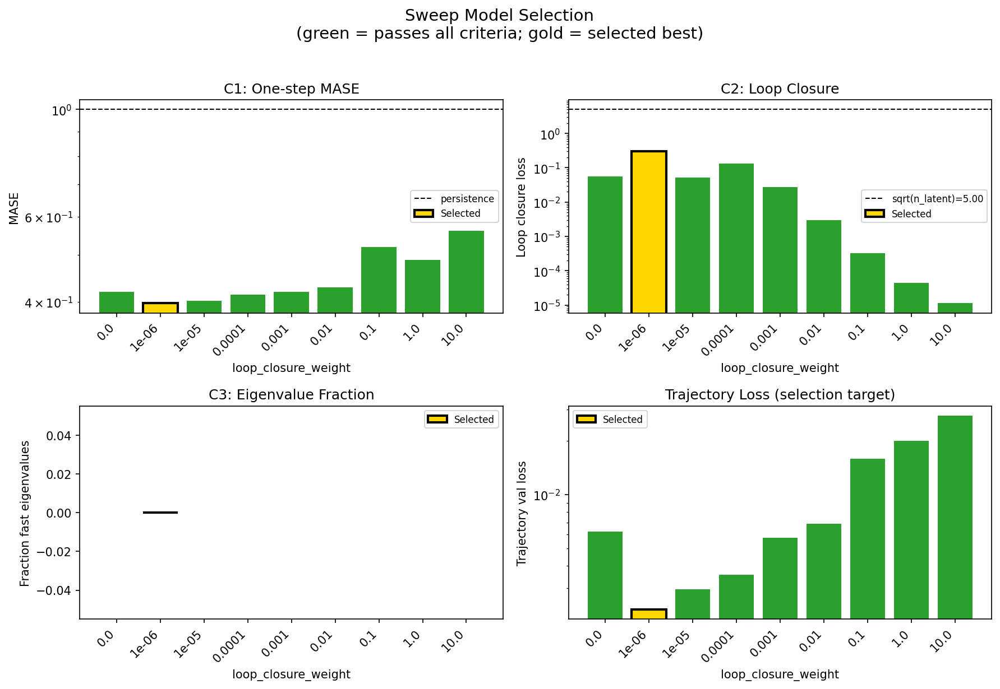
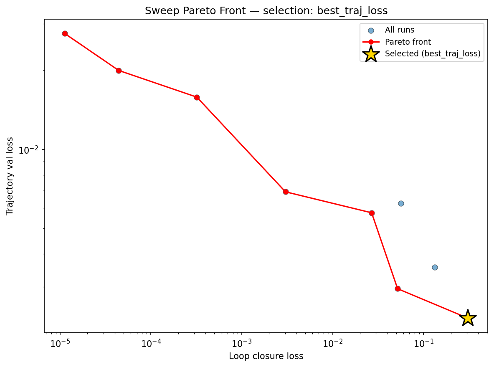
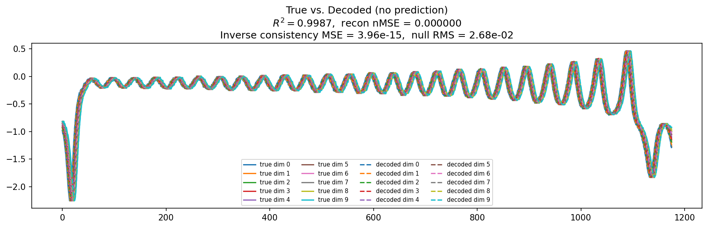
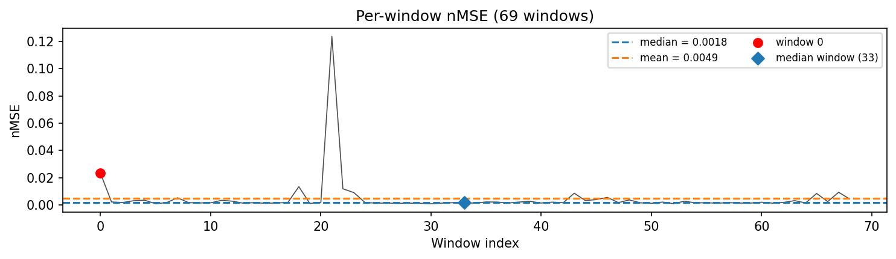
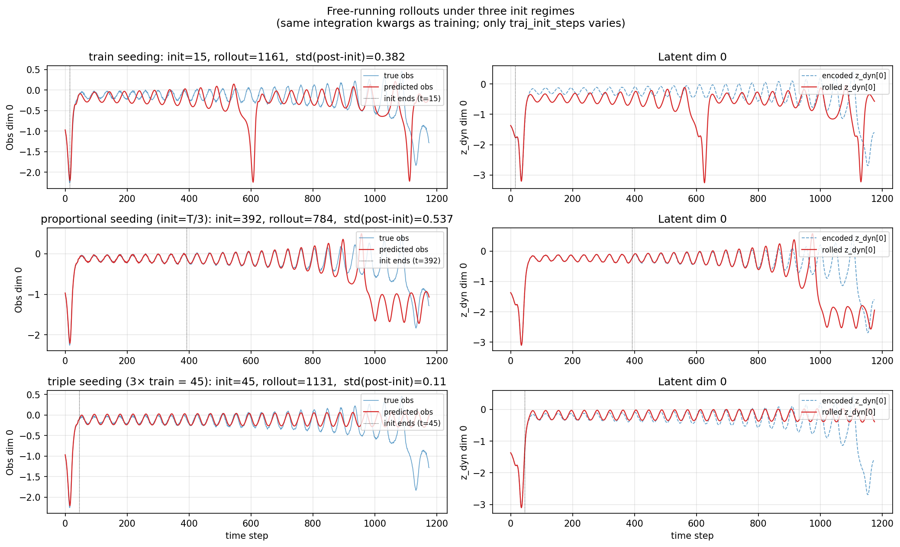
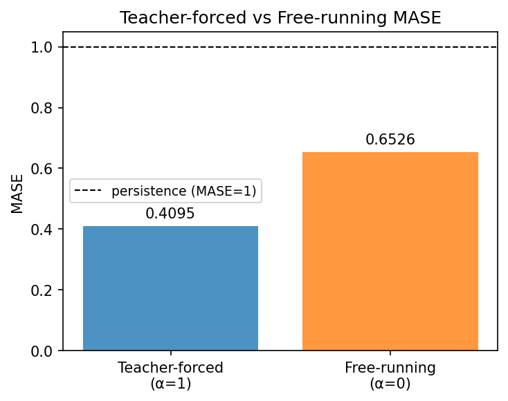
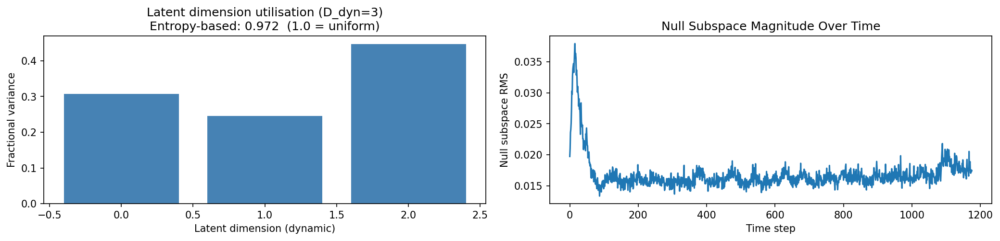
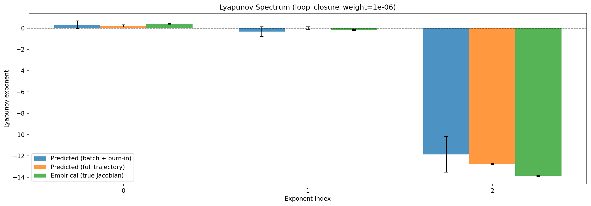
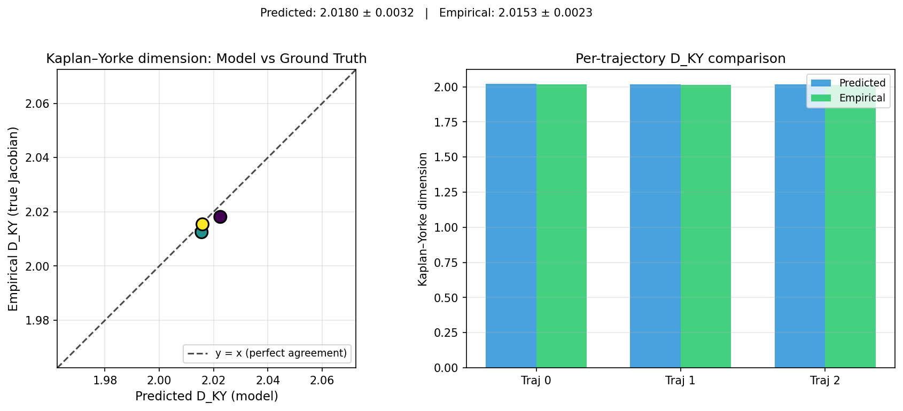
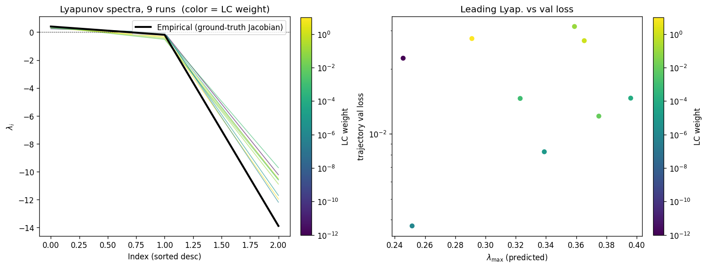
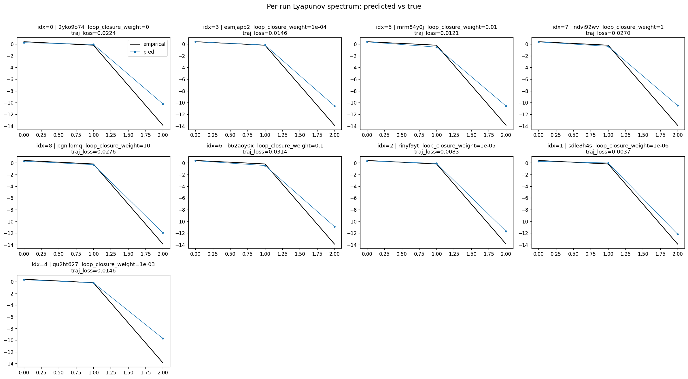
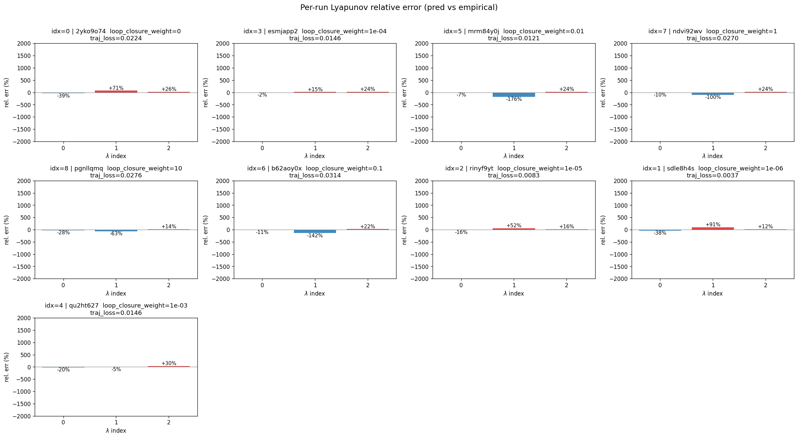
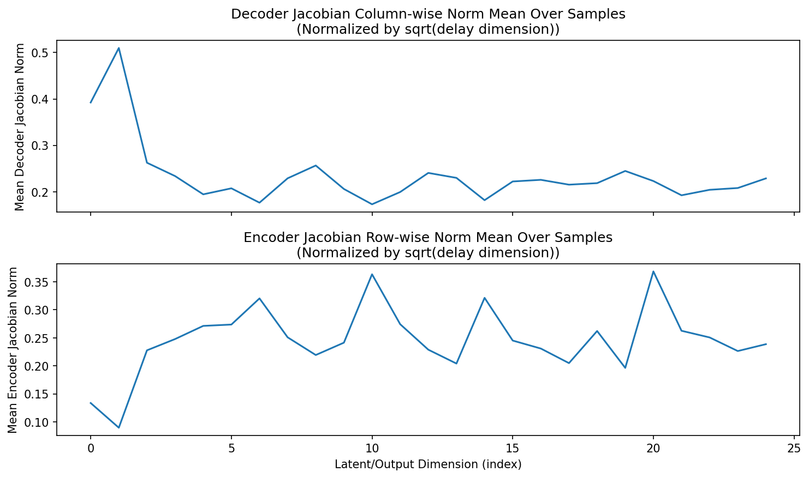
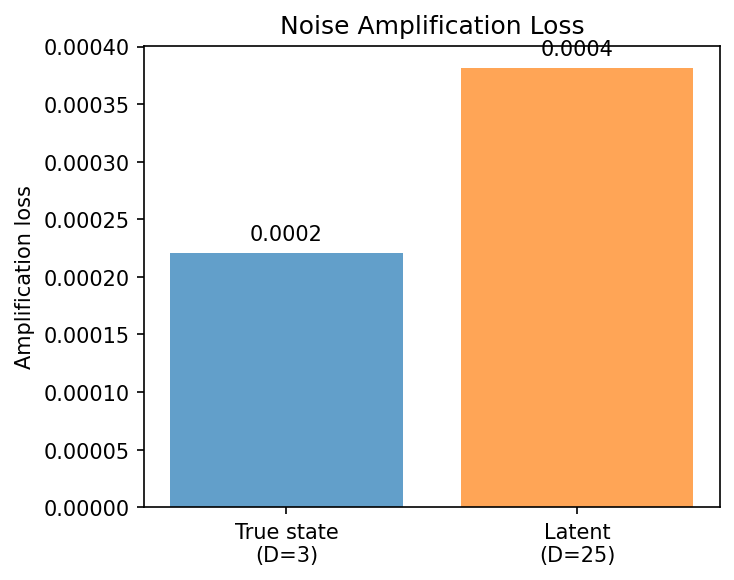
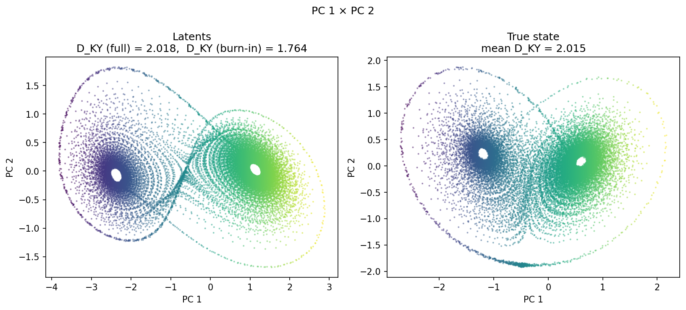
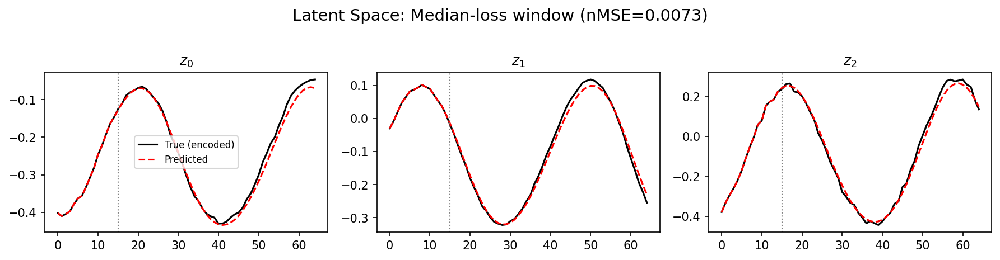
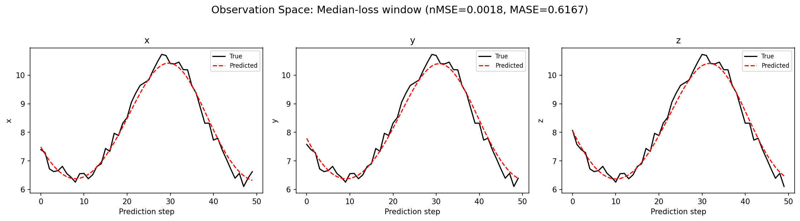
(to be written)
run_analytics stdoutrun_analyticsNo run_id provided — selecting best run from group 'lorenz_partial_25d_additive_mse_uniform_p50_obsnoise001__lc_sweep' ...
Found 9 total runs in JacobianODE/Lorenz_INDpartial_N25_D1_NormTrue_T3__JacobianODE (group=lorenz_partial_25d_additive_mse_uniform_p50_obsnoise001__lc_sweep)
All runs (state, loop_closure_weight, tangent_entropy_weight, kl_dyn_weight):
2yko9o74: state=finished, lc=0.0, te=0.0, kl_dyn=0.0
esmjapp2: state=finished, lc=0.0001, te=0.0, kl_dyn=0.0
mrm84y0j: state=finished, lc=0.01, te=0.0, kl_dyn=0.0
ndvi92wv: state=finished, lc=1.0, te=0.0, kl_dyn=0.0
pgnllqmq: state=finished, lc=10.0, te=0.0, kl_dyn=0.0
b62aoy0x: state=finished, lc=0.1, te=0.0, kl_dyn=0.0
rinyf9yt: state=finished, lc=1e-05, te=0.0, kl_dyn=0.0
sdle8h4s: state=finished, lc=1e-06, te=0.0, kl_dyn=0.0
qu2ht627: state=finished, lc=0.001, te=0.0, kl_dyn=0.0
slurm_timeout_min not found in any run config — falling back to 180 min
Including 2yko9o74 (lc=0.0): use_all_runs=True (state=finished)
Including esmjapp2 (lc=0.0001): use_all_runs=True (state=finished)
Including mrm84y0j (lc=0.01): use_all_runs=True (state=finished)
Including ndvi92wv (lc=1.0): use_all_runs=True (state=finished)
Including pgnllqmq (lc=10.0): use_all_runs=True (state=finished)
Including b62aoy0x (lc=0.1): use_all_runs=True (state=finished)
Including rinyf9yt (lc=1e-05): use_all_runs=True (state=finished)
Including sdle8h4s (lc=1e-06): use_all_runs=True (state=finished)
Including qu2ht627 (lc=0.001): use_all_runs=True (state=finished)
Found 9 effectively-done sweep runs:
loop_closure_weight=0.0, tangent_entropy_weight=0.0, kl_dyn_weight=0.0 -> run_id=2yko9o74
loop_closure_weight=1e-06, tangent_entropy_weight=0.0, kl_dyn_weight=0.0 -> run_id=sdle8h4s
loop_closure_weight=1e-05, tangent_entropy_weight=0.0, kl_dyn_weight=0.0 -> run_id=rinyf9yt
loop_closure_weight=0.0001, tangent_entropy_weight=0.0, kl_dyn_weight=0.0 -> run_id=esmjapp2
loop_closure_weight=0.001, tangent_entropy_weight=0.0, kl_dyn_weight=0.0 -> run_id=qu2ht627
loop_closure_weight=0.01, tangent_entropy_weight=0.0, kl_dyn_weight=0.0 -> run_id=mrm84y0j
loop_closure_weight=0.1, tangent_entropy_weight=0.0, kl_dyn_weight=0.0 -> run_id=b62aoy0x
loop_closure_weight=1.0, tangent_entropy_weight=0.0, kl_dyn_weight=0.0 -> run_id=ndvi92wv
loop_closure_weight=10.0, tangent_entropy_weight=0.0, kl_dyn_weight=0.0 -> run_id=pgnllqmq
n_dims=25, n_latent=25, n_dyn=3, dt=0.0150
run=2yko9o74: DiagnosticMetrics(one_step_mase=0.41966408491134644, loop_closure_loss=0.056269191205501556, fast_eigenvalue_fraction=0.0, trajectory_val_loss=0.0062315575778484344) (from cache, n_batches=100)
run=sdle8h4s: DiagnosticMetrics(one_step_mase=0.39701828360557556, loop_closure_loss=0.3059949576854706, fast_eigenvalue_fraction=0.0, trajectory_val_loss=0.002283151261508465) (from cache, n_batches=100)
run=rinyf9yt: DiagnosticMetrics(one_step_mase=0.40121379494667053, loop_closure_loss=0.05184609815478325, fast_eigenvalue_fraction=0.0, trajectory_val_loss=0.00295262667350471) (from cache, n_batches=100)
run=esmjapp2: DiagnosticMetrics(one_step_mase=0.4133065938949585, loop_closure_loss=0.1331740915775299, fast_eigenvalue_fraction=0.0, trajectory_val_loss=0.003561542835086584) (from cache, n_batches=100)
run=qu2ht627: DiagnosticMetrics(one_step_mase=0.41893425583839417, loop_closure_loss=0.02685912884771824, fast_eigenvalue_fraction=0.0, trajectory_val_loss=0.005741240922361612) (from cache, n_batches=100)
run=mrm84y0j: DiagnosticMetrics(one_step_mase=0.42870235443115234, loop_closure_loss=0.0030276314355432987, fast_eigenvalue_fraction=0.0, trajectory_val_loss=0.006899154279381037) (from cache, n_batches=100)
run=b62aoy0x: DiagnosticMetrics(one_step_mase=0.5188819766044617, loop_closure_loss=0.0003201020008418709, fast_eigenvalue_fraction=0.0, trajectory_val_loss=0.01581365056335926) (from cache, n_batches=100)
run=ndvi92wv: DiagnosticMetrics(one_step_mase=0.48773711919784546, loop_closure_loss=4.427452222444117e-05, fast_eigenvalue_fraction=0.0, trajectory_val_loss=0.0199715755879879) (from cache, n_batches=100)
run=pgnllqmq: DiagnosticMetrics(one_step_mase=0.5603161454200745, loop_closure_loss=1.128054009313928e-05, fast_eigenvalue_fraction=0.0, trajectory_val_loss=0.027598319575190544) (from cache, n_batches=100)
Ranking method: best_traj_loss
Best run ID: sdle8h4s
Best loop_closure_weight: 1e-06
Best tangent_entropy_weight: 0.0
Best kl_dyn_weight: 0.0
Best traj loss: 0.002283
Criteria applied: ['C1', 'C2', 'C3']
Surviving: 9 / 9
Auto-selected run_id: sdle8h4s
======================================================================
PARETO FRONTIER RUNS (7 runs)
======================================================================
Run ID LC Loss Traj Val Loss
------------ -------------- --------------
pgnllqmq 0.000011 0.027598
ndvi92wv 0.000044 0.019972
b62aoy0x 0.000320 0.015814
mrm84y0j 0.003028 0.006899
qu2ht627 0.026859 0.005741
rinyf9yt 0.051846 0.002953
sdle8h4s 0.305995 0.002283 <-- selected
======================================================================
RANKING METHOD COMPARISON (over 9 survivors)
======================================================================
Method Run ID LC Loss Traj Val Loss
---------------------- ------------ -------------- --------------
best_traj_loss sdle8h4s 0.305995 0.002283 <-- active
pareto_knee qu2ht627 0.026859 0.005741
geo_rank sdle8h4s 0.305995 0.002283
minimax_rank qu2ht627 0.026859 0.005741
geo_log_score sdle8h4s 0.305995 0.002283
minimax_log_score mrm84y0j 0.003028 0.006899
======================================================================
Loading run sdle8h4s from JacobianODE/Lorenz_INDpartial_N25_D1_NormTrue_T3__JacobianODE ...
Train dataset shape: torch.Size([24442, 65, 25])
Validation dataset shape: torch.Size([7777, 65, 25])
Test dataset shape: torch.Size([3333, 65, 25])
Train trajectories dataset shape: torch.Size([22, 1176, 25])
Validation trajectories dataset shape: torch.Size([7, 1176, 25])
Test trajectories dataset shape: torch.Size([3, 1176, 25])
Loading checkpoint epoch=146-step=29400.ckpt...
Computing reconstruction ...
Computing MASE ...
Teacher-forced MASE: 0.4095
Free-running MASE: 0.6526
Computing latent utilization ...
Entropy-based utilization: 0.972
Null subspace mean RMS: 1.707343e-02
Computing Lyapunov exponents ...
Computing full-trajectory Lyapunov (3 test trajs, T=1176) ...
Predicted Lyapunov exponents (batch+burn-in, 128 windowed trajs):
λ_1 = +0.3283 ± 0.3558
λ_2 = -0.3236 ± 0.4538
λ_3 = -11.8612 ± 1.6829
Predicted Lyapunov exponents (full-length, 3 test trajs):
λ_1 = +0.2158 ± 0.1104
λ_2 = +0.0143 ± 0.1256
λ_3 = -12.7700 ± 0.0432
Empirical Lyapunov exponents (mean ± std):
λ_1 = +0.3846 ± 0.0251
λ_2 = -0.1716 ± 0.0444
λ_3 = -13.8799 ± 0.0398
Mean KY dim (predicted): 2.018 ± 0.003
Mean KY dim (empirical): 2.015 ± 0.002
Mean KY dim (burn-in): 1.764 ± 0.435
Computing prediction windows ...
Windows: 69 — nMSE min=0.0009, median=0.0018, mean=0.0049, max=0.1237
Computing long-trajectory free-running rollouts ...
Computing encoder/decoder Jacobians ...
encoder_jacobian: (128, 25, 25)
decoder_jacobian: (128, 25, 25)
Computing amplification loss ...
Amplification loss — True state: 0.000221
Amplification loss — Latent: 0.000382